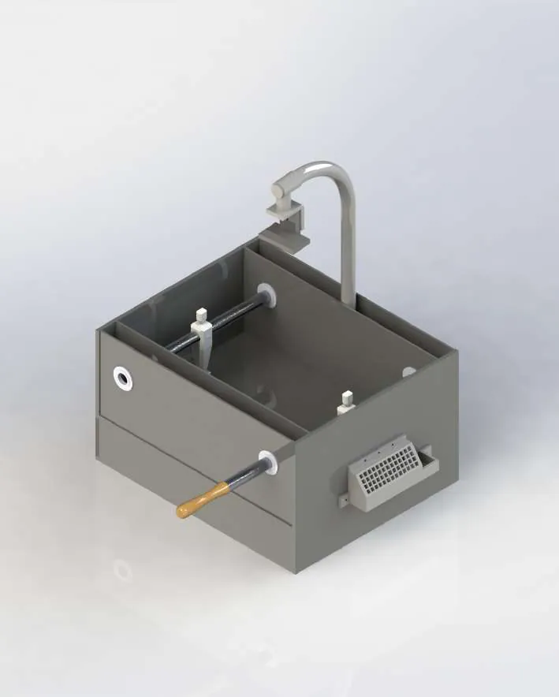
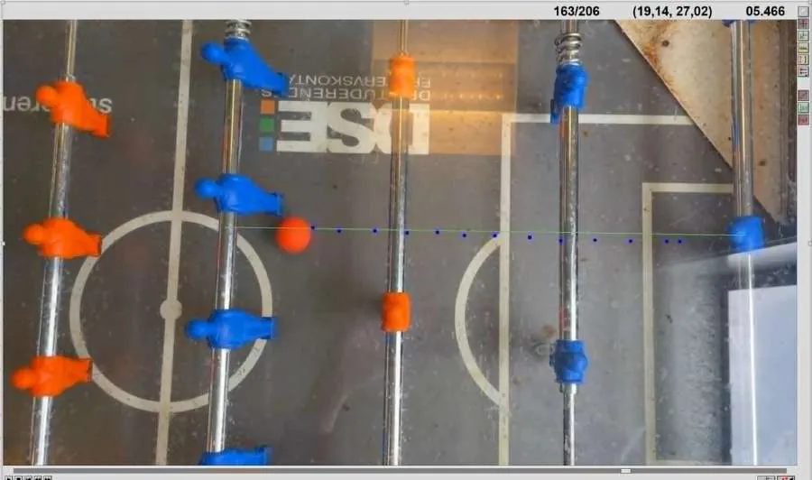
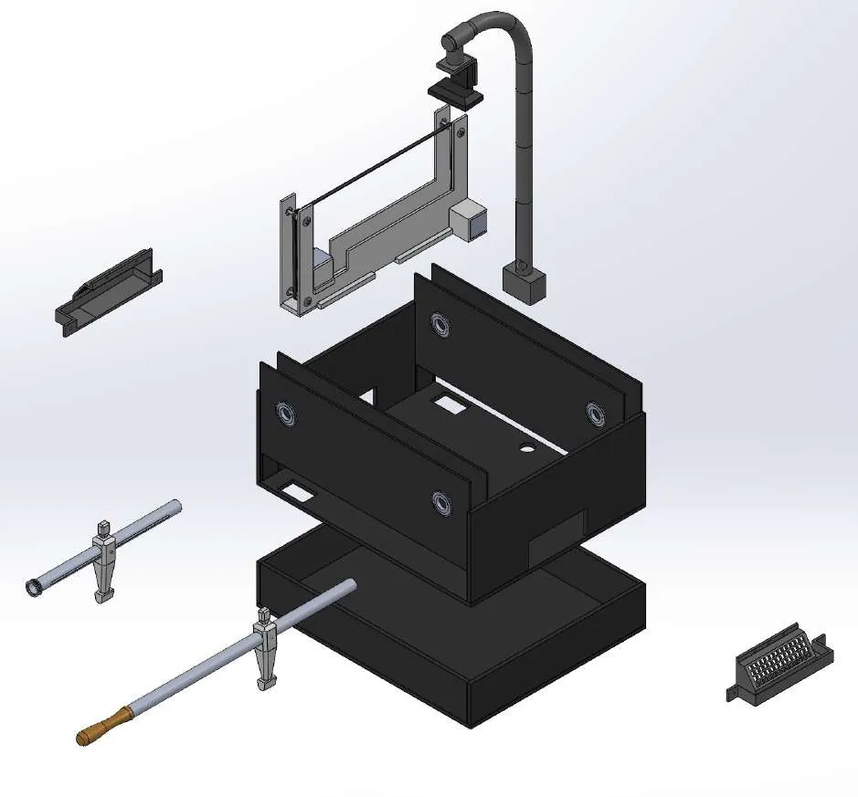
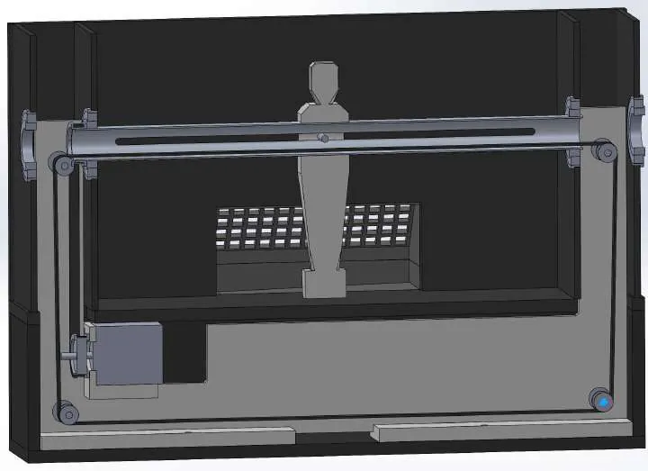
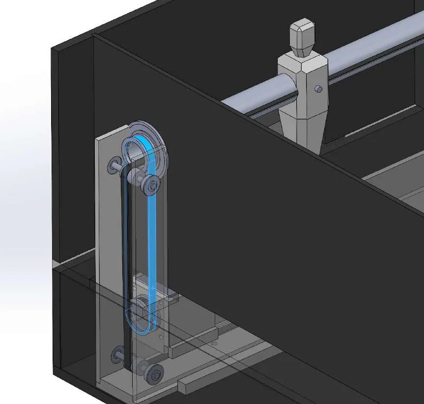
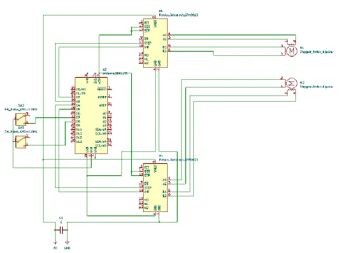

← All workSheet 04 of 08
Course 62800 Intro to Mechatronics & Robotics Systems · DTU · team of 2
Foosball Goalkeeper Robot
A robot goalkeeper for table football. A camera above the table follows the ball, and stepper motors slide and swing the keeper to block shots.
- Context
- Course 62800, DTU
- Team
- 2 people
- My role
- Requirements, speed tests, mechanical design & CAD
- Tools
- Arduino, Nema 17, Python/OpenCV, CAD
- 1.06 m/s
- median kick speed, 67 % of a standard table
- 0.60 m/s
- median sliding speed, 138 % of a standard table
- 2
- stepper axes: slide and kick
What we built
- A custom table with a 39.7 × 53.2 cm playing field, painted black to give the camera good contrast.
- A camera on a mast of ten 3D-printed parts above the field. Python with OpenCV tracks the ball and the goalkeeper by colour, calibrated from pixel positions to keeper positions.
- Two Nema 17 stepper motors controlled by an Arduino (AccelStepper): one slides the keeper on a 6 mm timing belt hidden in the hollow side walls, the other swings it to kick. Endstops calibrate the travel.
- An electronics bay under the field for the Arduino, the stepper drivers and the belt hardware.


My part
What I did in the two-person team
- Wrote the requirements specification.
- Ran the proof-of-concept experiments on kick speed and sliding speed that validated the concept.
- Did the mechanical design and CAD.
- Worked on the Arduino and stepper control alongside my teammate.
Results and limits
We filmed kicks and slides on a standard table and on our robot table and analysed the videos in LoggerPro.
- Kick speed (median): 1.06 m/s for the robot against 1.58 m/s on a standard table, about 67 %.
- Sliding speed (median): 0.60 m/s for the robot against 0.43 m/s on a standard table, about 138 %.
- Live tracking and control worked. Weak points we found: timing-belt tension, gear grip, the camera mast rotating, and poor access to the electronics bay.









